Visualizadores con la API-IDEE
Visualizadores creados con la API-IDEE
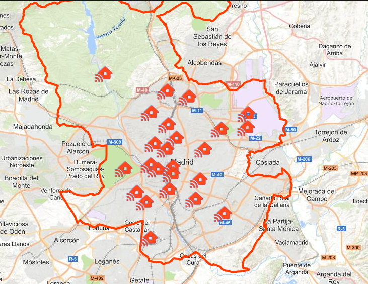
Datos en tiempo real de las estaciones de calidad del aire del Ayuntamiento de Madrid.
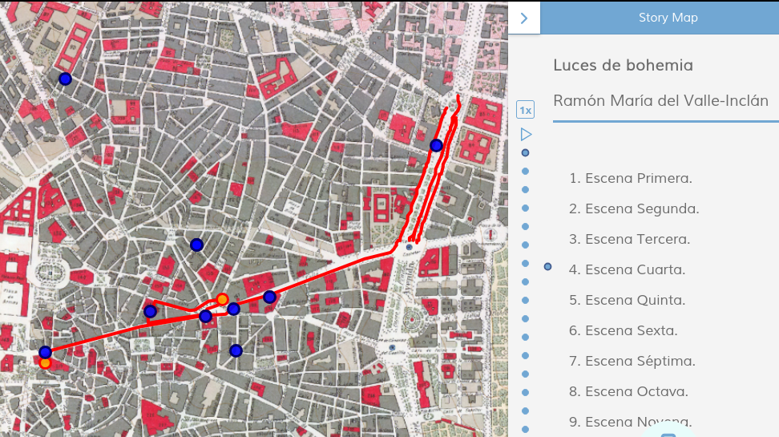
Story Map de Luces de Bohemia, escrita por Ramón María del Valle-Inclán y publicada en 1920.
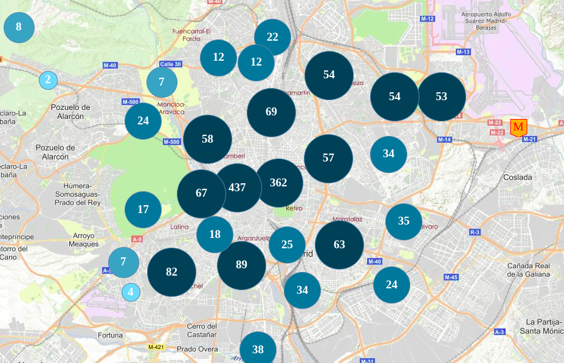
Visualizador que ofrece la información sobre puntos de interés histórico y monumentos de Madrid.
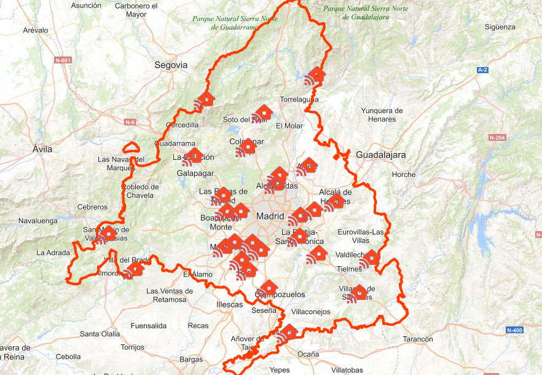
Datos en tiempo real de las estaciones de calidad del aire de la Comunidad de Madrid.
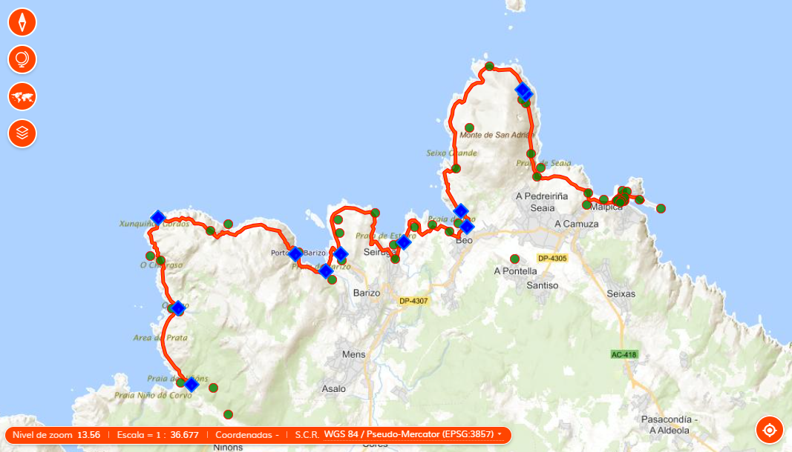
Etapas del Camino de los Faros por la costa de la muerte en Galicia.
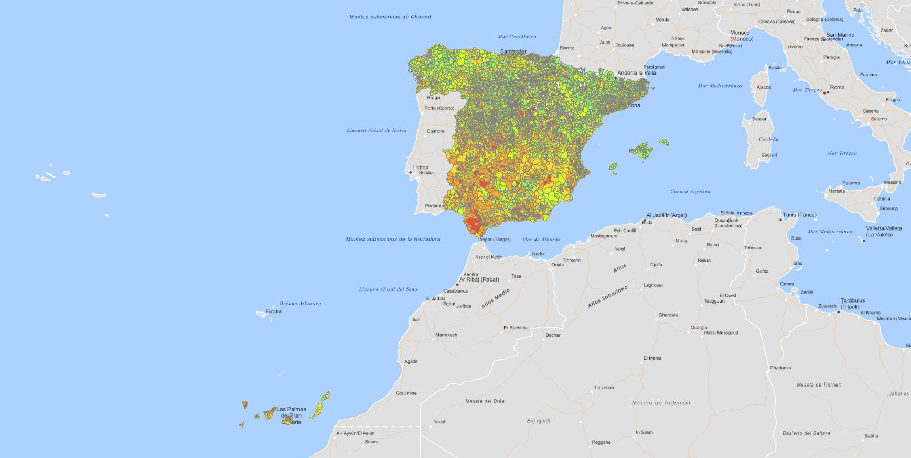
Porcentaje de paro en España calculado a partir de la población y el número de parados.
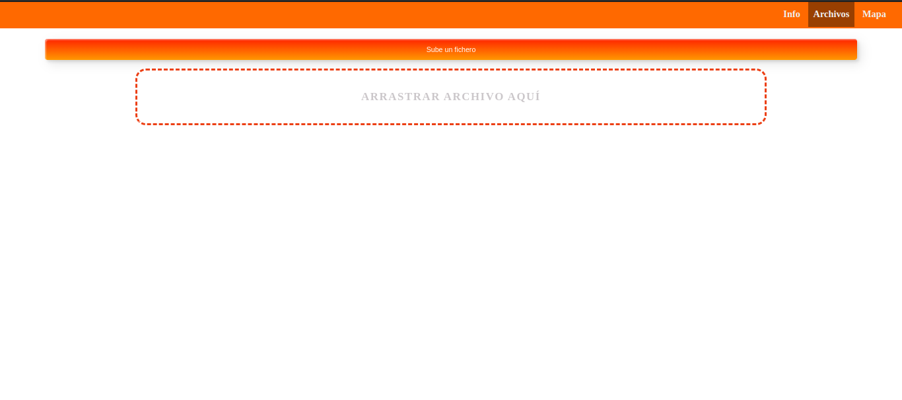
Aplicación para la transformación y visualización de datos.
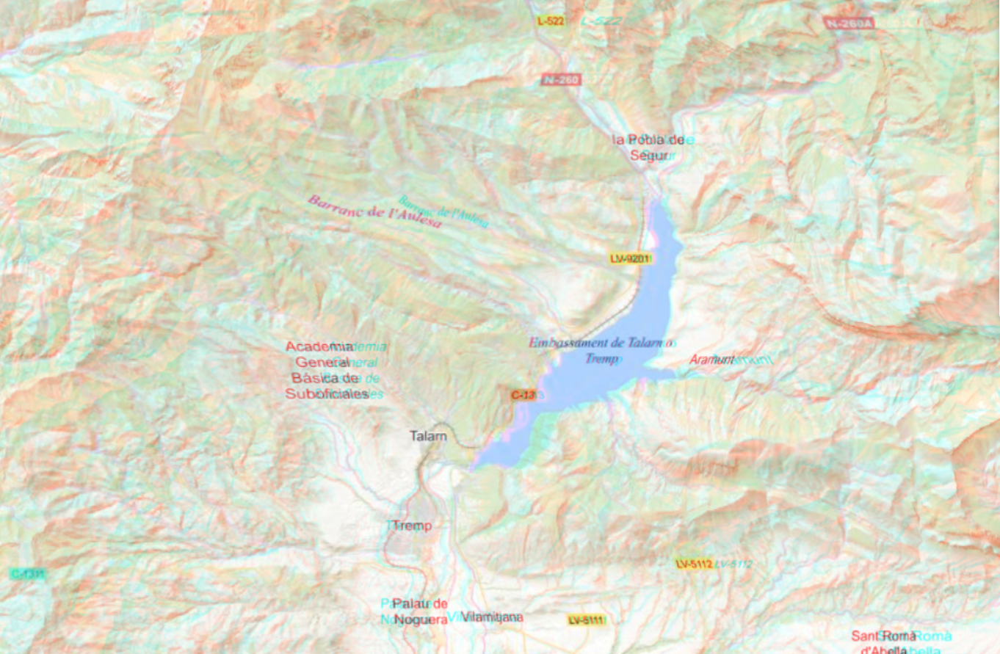
Visualizador estereoscópico del relieve: anaglifo rojo/cian y vista partida, en 2D y 3D. Requiere gafas anaglíficas para el modo anaglifo.
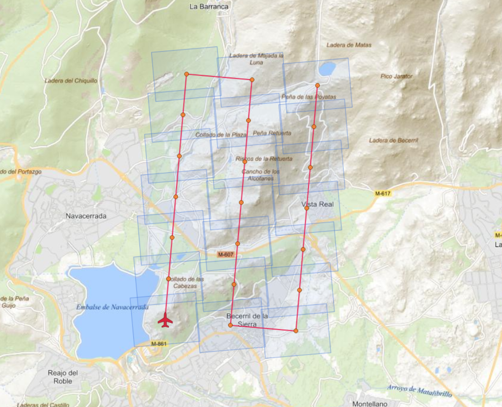
Importa, planifica y visualiza vuelos fotogramétricos en 2D y 3D: fotocentros, huellas y líneas de pasada, con cálculo de vuelo por GSD, orientación óptima y recorte al área.
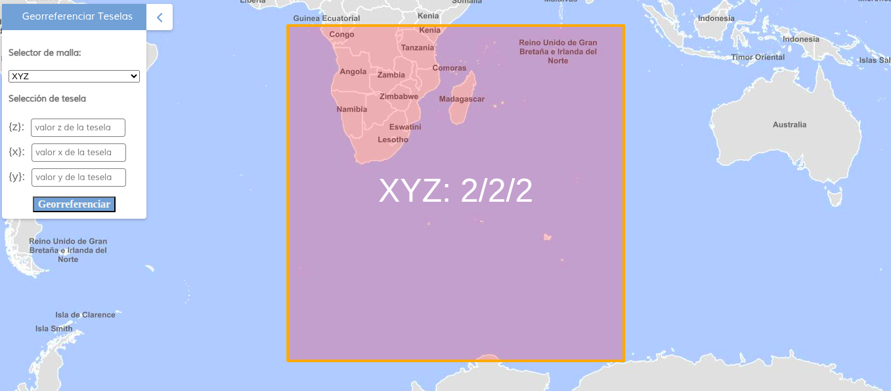
Visualizador para georreferenciar teselas.
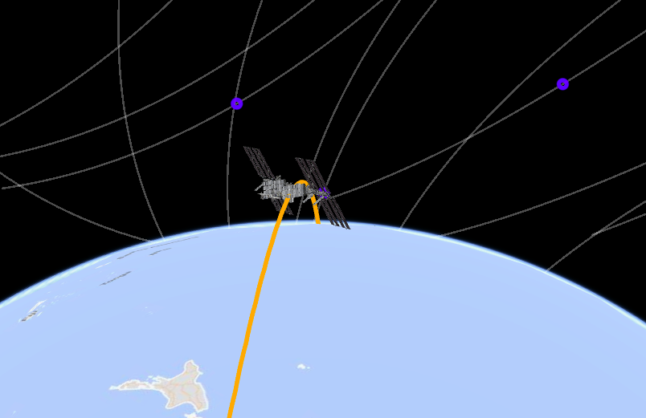
Visualizador que muestra en tiempo real la Estación Espacial Internacional y los satélites Galileo.
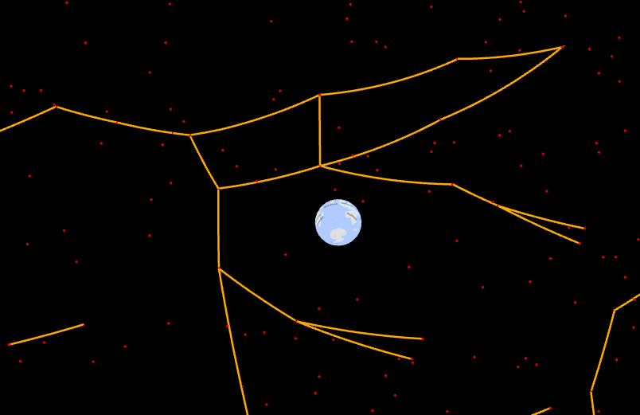
Visualizador que muestra en tiempo real las constelaciones, estrellas y planetas.
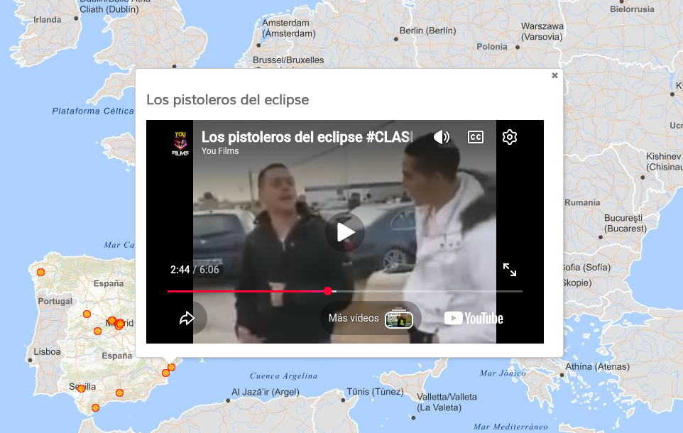
Visualizador que muestra los video-memes georreferenciados.
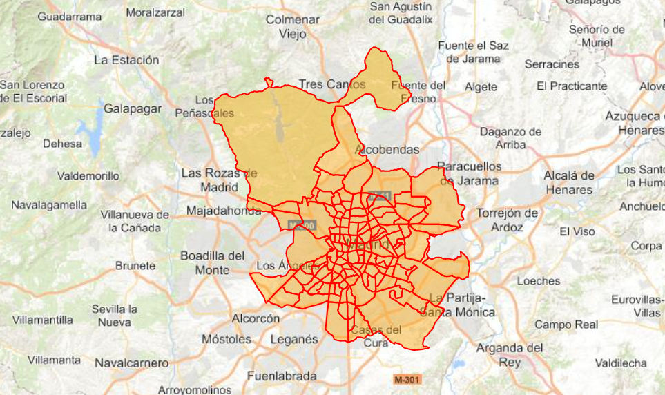
Visualizador que muestra un GeoJSON a partir de su URL mediante el parámetro GET gjson_url.
gjson_url
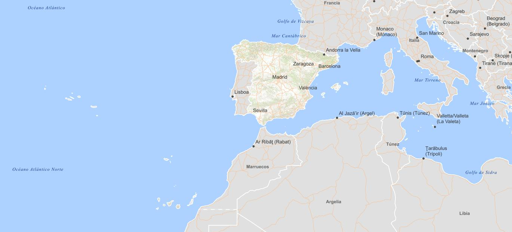
Compara varias vistas del territorio (cortinilla y espejo). Cada vista es un mapa independiente y puede estar en 2D o 3D.
Ejemplo de un visualizador simple.
Sin resultados. Prueba con otra palabra clave o borrar la búsqueda.